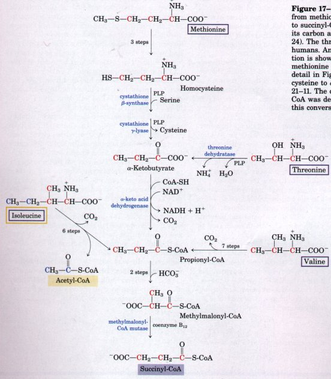
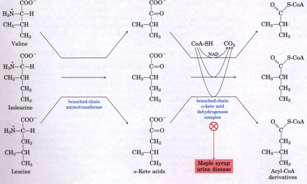
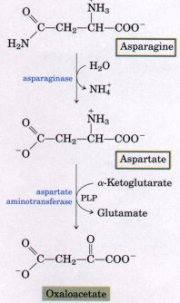
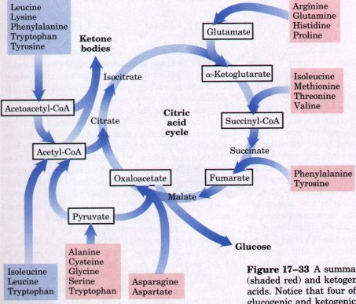

The carbon skeletons of methionine, isoleucine, threonine, and valine are degraded by pathways that yield succinyl-CoA (Fig. 17-30), an intermediate of the citric acid cycle. Methionine donates its methyl group to one of several possible acceptors through S-adenosylmethionine, and three of the four remaining atoms of its carbon skeleton are converted into those of propionate as propionyl-CoA.
 |
Figure 17-30 Outline of the catabolic pathways from
methionine, isoleucine, threonine, and valine to
succinyl-CoA. Isoleucine also contributes two of its
carbon atoms to acetyl-CoA (see also Fig. 1724). The
threonine pathway shown here occurs in humans. Another
pathway for threonine degradation is shown in Fig. 17-22.
The pathway from methionine to homocysteine is described
in more detail in Fig. 17-20. The steps that convert
homocysteine to α-ketobutyrate are illustrated in Fig.
21-11. The conversion of propionyl-CoA to succinylCoA was
described in Chapter 16; the last step in this conversion
requires coenzyme B12.
|
BOX 17-2Scientific Sleuths Solve a Murder MysteryTruth can sometimes be stranger than fiction-or at least as strange as a made-for-TV movie. Take, for example, the case of Patricia Stallings. Convicted of the murder of her infant son, she was sentenced to life in prison-but was later found innocent, thanks to the medical sleuthing of three persistent researchers. The story began in the summer of 1989 when Stallings brought her three-month-old son, Ryan, to the emergency room of Cardinal Glennon Children's Hospital in St. Louis. The child had labored breathing, uncontrollable vomiting, and gastric distress. According to the attending physician, a toxicologist, the child's symptoms indicated that he had been poisoned with ethylene glycol, an ingredient of antifreeze, a conclusion apparently confirmed by analysis by a commercial lab. After he recovered, the child was placed in a foster home, and Stallings and her husband, David, were allowed to see him in supervised visits. But when the infant became ill, and subsequently died, after a visit in which Stallings had been briefly left alone with him, she was charged with first-degree murder and held without bail. At the time, the evidence seemed compelling as both the commercial lab and the hospital lab found large amounts of ethylene glycol in the boy's blood and traces of it in a bottle of milk Stallings had fed her son during the visit. But without knowing it, Stallings had performed a brilliant experiment. While in custody, she learned she was pregnant; she subsequently gave birth to another son, David Stallings Jr., in February 1990. He was placed immediately in a foster home, but within two weeks he started having symptoms similar to Ryan's. David was eventually diagnosed with a rare metabolic disorder called methylmalonic acidemia (MMA). A recessive genetic disorder of amino acid metabolism, MMA affects about 1 in 48,000 newborns and presents symptoms almost identical with those caused by ethylene glycol poisoning. Stallings couldn't possibly have poisoned her second son, but the Missouri state prosecutor's of fice was not impressed by the new developments and pressed forward with her trial anyway. The court wouldn't allow the MMA diagnosis of the second child to be introduced as evidence, and in January 1991 Patricia Stallings was convicted of assault with a deadly weapon and sentenced to life in prison. Fortunately for Stallings, however, William Sly, chairman of the Department of Biochemistry and Molecular Biology, and James Shoemaker, head of a metabolic screening lab, both at St. Louis University, got interested in her case when they heard about it from a television broadcast. Shoemaker performed his own analysis of Ryan's blood and didn't detect ethylene glycol. He and Sly then contacted Piero Rinaldo, a metabolic disease expert at Yale University School of Medicine whose lab is equipped to diagnose MMA from blood samples. When Rinaldo analyzed Ryan's blood serum, he found high concentrations of methylmalonic acid, a breakdown product of the branched chain amino acids isoleucine and valine, which accumulates in MMA patients because the enzyme that should convert it to the next product in the metabolic pathway is defective. And particularly telling, he says, the child's blood and urine contained massive amounts of ketones, another metabolic consequence of the disease. Like Shoemaker, he did not find any ethylene glycol in a sample of the baby's bodily fluids. The bottle couldn't be tested, since it had mysteriously disappeared. Rinaldo's analyses convinced him that Ryan had died from MMA, but how to account for the results from two labs, indicating that the boy had ethylene glycol in his blood? Could they both be wrong? When Rinaldo obtained the lab reports, what he saw was, he says, "scary." One lab said that Ryan Stallings' blood contained ethylene glycol, even though the blood sample analysis did not match the lab's own profile for a known sample containing ethylene glycol. "This was not just a matter of questionable interpretation. The quality of their analysis was unacceptable," Rinaldo says. And the second laboratory? According to Rinaldo, that lab detected an abnormal component in Ryan's blood andjust "assumed it was ethylene glycol." Samples from the bottle had produced nothing unusual, says Rinaldo, yet the lab claimed evidence of ethylene glycol in that, too. Rinaldo presented his findings to the case's prosecutor, George McElroy, who called a press conference the very next day. "I no longer believe the laboratory data," he told reporters. Having concluded that Ryan Stallings had died of MMA after all, McElroy dismissed all charges against Patricia Stallings on September 20, 1991. *By Michelle Hoffman (1991). Science 253, 931. Copyright 1991 by the American Association for the Advancement of Science. |
Isoleucine undergoes transamination, followed by oxidative decarboxylation of the resulting α-keto acid. The remaining five-carbon skeleton derived from isoleucine undergoes further oxidation, yielding acetyl-CoA and propionyl-CoA. In human tissues, threonine is also converted to propionyl-CoA. Propionyl-CoA derived from these three amino acids is converted to succinyl-CoA by the pathway described in Chapter 16 for propionate derived from the oxidation of fatty acids of uneven chain length: carboxylation to methylmalonyl-CoA, epimerization of the methylmalonyl-CoA, and finally its conversion to succinylCoA by the coenzyme B12-dependent enzyme methylmalonyl-CoA mutase (see Fig. 16-12). A rare genetic defect that results in the absence of methylmalonyl-CoA mutase causes a serious genetic disease called methylmalonic acidemia (Table 17-2, Box 17-2).
The oxidation of valine follows a path similar to those for the other three amino acids in this group (Fig. 17-30). After transamination and decarboxylation of valine, a series of oxidation reactions converts the remaining four carbons into methylmalonyl-CoA, which is transformed into succinyl-CoA. Some parts of the valine and isoleucine degradative pathways closely parallel steps in fatty acid degradation (Chapter 16).
Although much of the catabolism of amino acids occurs in liver, the three amino acids with branched side chains (leucine, isoleucine, and valine) are oxidized as fuels primarily in muscle, adipose, kidney, and brain tissue. These extrahepatic tissues contain a single aminotransferase not present in liver that acts on all three branched-chain amino acids to produce the corresponding α-keto acids (Fig. 17-31).

Figure 17-31 The three branched-chain amino acids (valine, isoleucine, and leucine) share the first two enzymes in their catabolic pathways, which occur in extrahepatic tissues. The second enzyme, the branched-chain α-keto acid dehydrogenase complex, is defective in people with maple syrup urine disease. This dehydrogenase complex is analogous to the pyruvate and α-ketoglutarate dehydrogenases, and requires the same five cofactors (some not shown here).
There is a relatively rare human genetic disease in which these three α-keto acids accumulate in the blood and "spill over" into the urine. This condition, which unless treated results in abnormal development of the brain, mental retardation, and death in early infancy, is called maple syrup urine disease because of the characteristic odor imparted to the urine by the α-keto acids. It is treated by rigid control over the diet to limit intake of valine, isoleucine, and leucine to the minimum required to permit normal growth. All three α-keto acids derived from the branched-chain amino acids are acted on by a single enzyme, which is defective in patients with maple syrup urine disease. This explains why all three α-keto acids accumulate along with the corresponding amino acids (especially leucine) in affected individuals. This enzyme, the branched-chain a-keto acid dehydrogenase complex, catalyzes oxidative decarboxylation of each of the three a-keto acids, releasing the carboxyl group as CO2 and producing the acyl-CoA derivative (Fig. 17-31).
This decarboxylation reaction is formally analogous to two others encountered in Chapter 15: the oxidation of pyruvate to acetyl-CoA by the pyruvate dehydrogenase complex (p. 450) and the oxidation of α-ketoglutarate to succinyl-CoA in the citric acid cycle by the α-ketoglutarate dehydrogenase complex (p. 455). In fact, all three enzymes are closely homologous in structure, and the reaction mechanism is essentially the same for all. Five cofactors (thiamine pyrophosphate, FAD, NAD, lipoate, and coenzyme A) participate, and the three proteins in each of the complexes catalyze homologous reactions. This is clearly a case in which enzymatic machinery that evolved to catalyze one reaction was "borrowed" by gene duplication and further evolved to catalyze similar reactions in other pathways.
The branched-chain α-keto acid dehydrogenase complex of the rat is regulated by covalent modification in response to the content of branched-chain amino acids in the diet. When there is little or no excess dietary intake of branched-chain amino acids, the enzyme complex is phosphorylated and thereby inactivated by a protein kinase. Addition of excess branched-chain amino acids to the diet results in dephosphorylation and consequent activation of the enzyme. Recall that the pyruvate dehydrogenase complex is subject to similar regulation by phosphorylation and dephosphorylation (p. 468).
| The carbon skeletons of asparagine and
aspartate ultimately enter the citric acid cycle via
oxaloacetate. The enzyme asparaginase catalyzes the
hydrolysis of asparagine to yield aspartate, which
undergoes a transamination reaction with α-ketoglutarate
to yield glutamate and oxaloacetate (Fig. 17-32). The
latter enters the citric acid cycle. We have now seen how the 20 different amino acids, after loss of their nitrogen atoms, are degraded by dehydrogenation, decarboxylation, and other reactions to yield portions of their carbon backbones in the form of five central metabolites that can enter the citric acid cycle. Here they are completely oxidized to carbon dioxide and water. During electron transfer, ATP is generated by oxidative phosphorylation, and in this way amino acids contribute to the total energy supply of the organism. |
 Figure 17-32 The conversion of asparagine and aspartate to oxaloacetate . |
| Some carbon atoms from six of the amino acids (those that are degraded to acetoacetyl-CoA and/or acetyl-CoA: tryptophan, phenylalanine, tyrosine, isoleucine, leucine, and lysine) can yield ketone bodies in the liver, by conversion of acetoacetyl-CoA into acetone and β-hydroxybutyrate (see Fig. 16-16). These amino acids are ketogenic (Fig. 17-33). Their ability to form ketone bodies is particularly evident in untreated diabetes mellitus, in which large amounts of ketone bodies are produced by the liver, not only from fatty acids but from the ketogenic amino acids. Degradation of leucine, an exclusively ketogenic amino acid that is very common in proteins, makes a substantial contribution to ketosis during starvation. |  Figure 17-33 A summary of the glucogenic (shaded red) and ketogenic (shaded blue) amino acids. Notice that four of the amino acids are both glucogenic and ketogenic. The five amino acids that are degraded to pyruvate are also potentially ketogenic. Only two amino acids, leucine and lysine, are exclusively ketogenic. |
The amino acids that can be converted into pyruvate, α-ketoglutarate, succinyl-CoA, fumarate, and oxaloacetate can be converted into glucose and glycogen by pathways described in Chapter 19. They are called glucogenic amino acids. The division between ketogenic and glucogenic amino acids is not sharp; four amino acids (tryptophan, phenylalanine, tyrosine, and isoleucine) are both ketogenic and glucogenic. Some of the amino acids that can be converted into pyruvate, particularly alanine, cysteine, and serine, can also potentially form acetoacetate via acetyl-CoA, especially in severe starvation and untreated diabetes mellitus (Chapter 16).